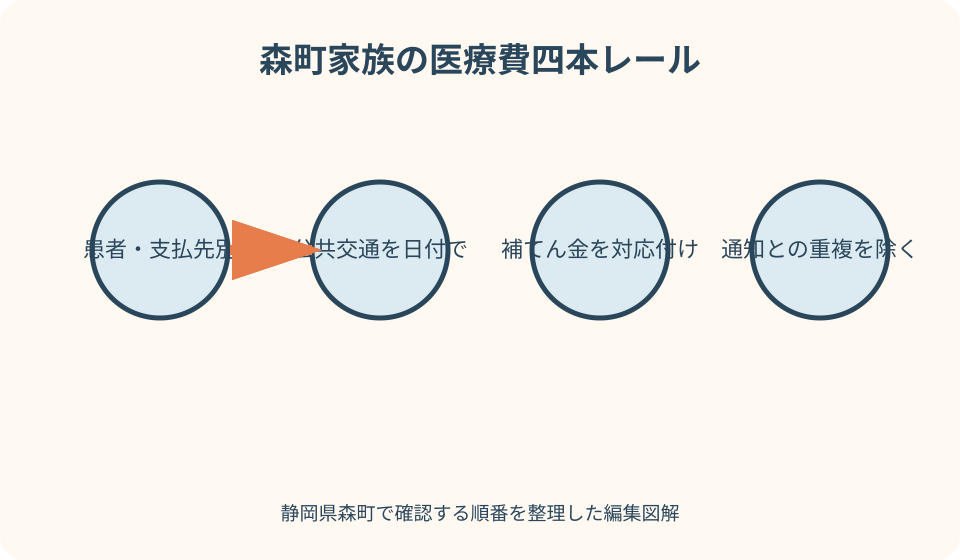
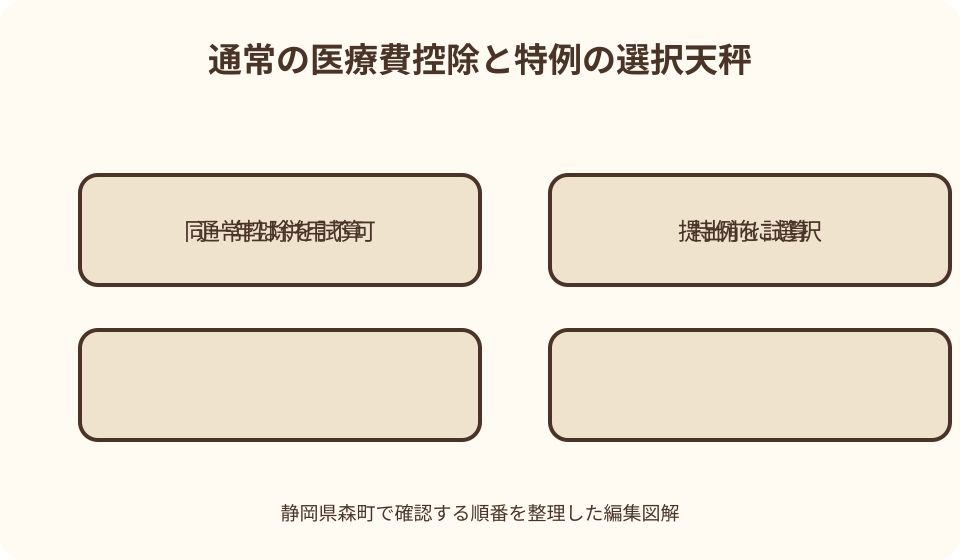

健康・医療・保険｜最終確認 2026-08-10
静岡県森町の医療費控除｜通知・領収書・通院交通費の整理方法
医療費控除は、医療費がそのまま返金される制度ではなく、一定の計算により所得から差し引く控除です。整理の中心は、1月1日から12月31日までに実際に支払った額、医療を受けた人、支払先、保険金等で補てんされた額です。森町の申告会場では医療費控除の明細書を事前に作成するよう案内しているため、領収書の束を会場へ持ち込む前に、国税庁の様式へ集計しておく必要があります。

編集イラスト最初に結論：領収書ではなく明細書を作る
医療費控除を受けるには、原則として医療費控除の明細書を確定申告書へ添付します。領収書を申告書へ一枚ずつ添付する方式ではなく、手元で集計して明細へ移す準備が中心です。
森町の直近の申告会場案内でも、医療費控除の明細書は来場前に作成し、会場で職員が代理作成しないと明記されています。次年分の日程は当該年の町案内を確認します。
明細は、医療を受けた人と病院・薬局などの支払先ごとにまとめられます。交通費、補てん金、医療費通知にない支払いを別欄で整理すると転記しやすくなります。
『医療に関係した支出だから全部対象』とも、『10万円未満だから申告できない』とも先に決めません。所得、補てん金、支出目的などをそろえて国税庁の計算へ当てはめます。
医療費控除は所得控除
医療費控除は、計算した控除額を所得金額から差し引く仕組みです。支払った医療費や控除額が、そのまま同額で口座へ振り込まれる制度ではありません。
実際の所得税への影響は、所得、ほかの控除、源泉徴収額などで変わります。家族が前年に受けた還付額を今年の見込みとして使わないでください。
所得税の確定申告をしない人でも、町県民税申告で医療費控除を追加する場面があります。森町は給与・年金の源泉徴収票にない控除を追加する人への案内を掲載しています。
どの申告が必要かは所得の種類や申告内容で異なります。所得税は国税庁・税務署、町県民税は森町税務課という役割を意識して相談します。
対象期間は支払った年の1月から12月
集計するのは、申告する年の1月1日から12月31日までに実際に支払った医療費です。診療を受けた日と支払日が年をまたぐ場合は、支払日を確認します。
クレジットカード、分割払い、未払医療費などは支払い時期の扱いに注意が必要です。領収書や利用明細を見ても判断できなければ税務署等へ確認します。
年末に入院し翌年に会計した費用を、診療年だけで前年分へ入れないようにします。反対に前年診療分を今年支払った場合も、資料へ診療日と支払日を併記します。
年度ではなく暦年で整理する点も重要です。2026年度の病院フォルダーをそのまま申告へ使わず、2026年1月から12月へ組み替えます。
誰が支払ったかと生計を一にする家族
通常の医療費控除は、申告する人が、自分または生計を一にする配偶者その他の親族のために支払った医療費を対象に計算します。同居だけが唯一の判断材料ではありません。
親子で別居していても生活費等の関係から生計を一にする場合がある一方、同じ住所でも家計が別の場合があります。家族関係だけで対象を決めず、実際の支払状況を整理します。
誰の医療費かと、誰が支払ったかは別の欄に書きます。医療費通知の被保険者名だけを見て、その人が必ず申告するものだと決めないでください。
夫婦のどちらが申告すると有利かという質問は、所得や支払い事実を含む個別の税務判断です。名義を後から都合よく選び替えず、実際に負担した人を基に確認します。
通常の医療費控除額の計算
国税庁の一般式は、実際に支払った医療費の合計から保険金等で補てんされる額を引き、さらに10万円を差し引きます。控除額の上限は200万円です。
ただし、その年の総所得金額等が200万円未満の場合は、10万円ではなく総所得金額等の5％相当額を差し引きます。『医療費が10万円を超えた人だけ』という説明では不十分です。
計算結果は税額そのものではありません。控除額が出ても、源泉徴収や所得状況によって還付の有無・額は異なるため、申告書作成コーナー等で全体を計算します。
所得の集計や総所得金額等の意味が分からない場合は、源泉徴収票、確定申告資料を用意して税務署、税理士、森町の対象となる相談へ確認します。
補てん金は対応する医療費へ結び付ける
高額療養費、家族療養費、出産育児一時金、生命保険の入院給付金など、医療費を補う給付があれば記録します。給付名、対象者、対象となる支出、決定額を分けます。
補てん金は、その給付の目的となった医療費を限度に差し引きます。余った額を、別の病気や家族の医療費から一律に引くものではないと国税庁は説明しています。
申告時までに支給額が確定していない場合は、見込額で計算し、後日確定額と違えば申告内容を訂正する扱いがあります。見込額をゼロとして放置しないでください。
医療機関窓口で最初から減額された分と、後日口座へ支給された分を二重に差し引かないよう、領収書の自己負担額と給付通知を照合します。
森町国保の給付記録も確認する
森町国保の加入者は、高額療養費、療養費、出産育児一時金などの給付が医療費控除の計算に関係することがあります。申請控えと支給決定通知を年別に保管します。
給付の申請中で未決定なら、対象となる診療月と見込額をメモします。世帯の高額療養費と個人別領収書が混ざる場合は、税務署等へ対応方法を確認します。
第三者行為による傷病で損害賠償や保険金を受ける場合も、何の医療費を補う金銭かを資料で確認します。名称だけでは控除計算を決められません。
森町の国保給付窓口は支給内容を確認する先であり、確定申告の最終的な税務判断を行う先とは限りません。給付資料を受け取り、税の相談先へ持参します。
医療費通知の六項目を確認する
医療費通知を明細書の簡略化に使うには、被保険者等の氏名、療養年月、療養を受けた人、病院・薬局等、支払った医療費額、保険者等の名称という六項目が必要です。
『医療費のお知らせ』という表題だけでは、税務上の医療費通知に該当するとは限りません。不足項目がある場合は、領収書を基に明細書を作るなど国税庁の案内へ従います。
通知に記載された額が、実際に支払った額と異なる場合があります。公費助成、窓口負担の調整、未収金などがないか、領収書と見比べます。
通知へ載った分と領収書から追加した分を二重計上しないよう、各支払いに『通知』『領収書追加』の印を付けます。家族ごとに一覧を分けると確認しやすくなります。
医療費通知にない月を補う
医療費通知は、年末近くの診療や保険外費用がすべて載るとは限りません。通知の対象月を確認し、欠ける期間は領収書から追加します。
医療機関名が省略されている、支払額が不明、対象者を判別できない通知は、そのまま簡略記載へ使えるかを国税庁の六項目と照合します。
自由診療、特別の料金、一定の交通費などはマイナポータル連携の医療費情報に含まれないことがあります。紙の領収書と交通記録を別に保管します。
通知が届くまで申告準備を止める必要はありません。先に領収書を人・支払先ごとに集計し、通知が届いた後で重複と不足を照合します。

領収書は5年間保管する
医療費控除の明細書を作成した場合、税務署が内容確認のため領収書の提示・提出を求めることがあるため、確定申告期限等から5年間は自宅等で保管します。
一定の医療費通知を添付した部分は領収書保存が不要となる扱いがありますが、通知にない費用や補完記入した費用は保存要否を分けて確認します。
紙の領収書は、人別・支払先別に封筒へ入れ、表に年分と明細書の行番号を書きます。感熱紙が薄くなる可能性に備え、読めるうちに画像や写しも残します。
再発行できない領収書を紛失した場合は、カード明細だけで対象になると決めず、医療機関への再発行可否や税務上の資料を相談します。自作の金額を確定値にしません。
明細書は人・支払先ごとにまとめる
国税庁の明細書では、医療を受けた人、病院・薬局などの支払先、医療費区分、支払額、補てん額を記載します。領収書一枚ずつでなくまとめて記載できます。
同じ人が同じ病院へ複数回通った場合は一年分を合計し、元帳には各日付と金額を残します。合計だけでは計算誤りを後から探せないためです。
病院と門前薬局は支払先が異なるので別に集計します。家族が同じ薬局を使っても、医療を受けた人ごとに分けます。
補てん金は一族合計へまとめず、どの人・支出に対応するかを記録します。対応が不明な保険給付は、保険者や税の相談先へ資料を見せます。
通院交通費の記録方法
医師等の診療を受けるため直接必要で、通常必要な通院費は対象になり得ます。電車・バスを使った日付、患者名、医療機関、出発地、経路、往復運賃を記録します。
交通系ICカードは医療目的以外の利用も混ざるため、利用履歴だけでなく診察日と対応させます。運賃改定があれば、実際に利用した日の額を使います。
小さい子どもなど付添いが必要な場合、付添人の交通費が含まれる例を国税庁は示しています。ただし個別の必要性は状況により確認します。
森町北部から町外の医療機関へ通う場合も、距離だけで対象額を見積もりません。公共交通の実費と、自家用車に関する支出を明確に分けます。
タクシー・自家用車を分ける
タクシー代は、電車やバスなどの公共交通機関が利用できない場合を除き、一般には対象に含まれないと国税庁が案内しています。利用理由を記録します。
夜間、緊急、歩行困難など事情があっても、この記事だけで対象と断定しません。領収書、受診時刻、公共交通の状況を残して税務署等へ確認します。
自家用車で通院した場合のガソリン代と駐車場料金は、国税庁の案内では医療費控除の対象になりません。距離に単価を掛けて通院費へ入れないでください。
高速道路料金、家族送迎の対価、宿泊費など判断に迷う支出は別欄へ置きます。通常必要で直接関係する費用かを、具体的な事情と資料で相談します。
対象可否が分かれやすい支出
健康診断や人間ドックの費用は一般には対象外とされますが、その結果重大な疾病が見つかり引き続き治療した場合の扱いなど例外があります。経過を資料で確認します。
歯科治療は、治療目的と美容目的、一般的な水準などで取扱いが分かれます。自由診療だから全て対象外、矯正だから全て対象という分類はできません。
眼鏡、補聴器、医療用器具、おむつ、介護サービスなどは、目的や証明書、サービス区分で扱いが変わります。購入品名だけで明細へ入れないでください。
予防接種、健康食品、診断書代、差額ベッド代なども、支出目的や本人の事情を含む確認が必要です。迷う領収書は捨てず、確定欄とは別の相談欄へ置きます。
出産・入院の費用を整理する
出産に関する医療費を整理するときは、妊婦健診、分娩、入院、交通費などを日付順に並べます。自治体助成券で賄われた額と実際の自己負担を混ぜません。
出産育児一時金など医療費を補う給付は、対応する費用から差し引く資料になります。給付額が出産費用を超えた場合も、他の医療費への扱いは国税庁の対応関係で確認します。
生命保険の入院給付金がある場合は、対象となる入院の領収書と給付決定書を同じ番号で結びます。保険料控除の資料とは別です。
個室料、家族の宿泊、身の回り品などは、一つの入院会計に含まれていても取扱いが同じとは限りません。明細を分け、判断に必要な医療上の事情を確認します。
高額療養費が未決定のとき
年末の診療では、高額療養費の支給額が申告時点で決まっていないことがあります。対象診療月、申請日、見込額、決定予定を記録します。
国税庁は、補てん額が未確定なら見込額で計算し、確定額が違えば申告内容を訂正すると説明しています。後で申告するかを含め、期限との関係を相談します。
限度額適用後の窓口額と、後日支給される高額療養費を二重に差し引かないよう、領収書、支給申請、決定通知を照合します。
世帯合算や多数回該当などが絡む場合、家族ごとの医療費と給付を単純に割り振れないことがあります。森町国保の決定資料を税務署等へ持参します。
セルフメディケーション税制との違い
セルフメディケーション税制は、一定の健康保持・疾病予防の取組をした人が、対象となる特定一般用医薬品等の購入費について使える医療費控除の特例です。
国税庁の現行案内では、対象購入費から1万2千円を差し引き、控除額の上限は8万8千円です。対象商品はレシートの表示や厚生労働省の品目一覧で確認します。
健診や予防接種など一定の取組を行ったことが要件ですが、その取組自体の費用が特例の控除対象になるわけではありません。取組と購入費を別に整理します。
制度の適用期間や対象品目は改正され得ます。申告する年分の国税庁・厚生労働省情報を使い、前年の対象マークだけで判断しないでください。
二つの制度を比較して一方を選ぶ
通常の医療費控除とセルフメディケーション税制は選択適用で、同じ年に両方を併用できません。家族内で別々に計上すれば併用できると決めつけないでください。
選択後は更正の請求や修正申告で別制度へ変更できないと国税庁は案内しています。提出前に二つの明細を仮作成し、申告書全体で比較します。
通常控除では診療費等と対象となる薬代・交通費、特例では対象医薬品購入費を集計します。同じレシートを両方の確定明細へ重複させません。
どちらが有利かは支出額だけでなく所得や補てん金等にも関係します。比較ツールの結果を最終判断にせず、複雑な場合は税務署や税理士へ相談します。
マイナポータル連携とe-Tax
マイナポータル連携では、対応する医療費通知情報を取得し、確定申告書へ自動入力できます。手入力を減らせますが、すべての支出が自動で入るとは限りません。
交通費、通知対象外の保険外費用、年末分などは自分で追加する場合があります。連携後の合計を領収書・交通記録と照合します。
家族分を連携する場合は、代理人設定など必要な準備があります。本人のマイナンバーカードや暗証番号を家族が無断で使わないようにします。
電子申告の送信後は、受信通知、申告書控え、医療費明細データを保存します。翌年の資料に流用せず、提出年分と送信日をファイル名へ入れます。

森町の申告相談を利用する
森町は直近の確定申告会場を事前予約制とし、受付できない申告種類も示しています。医療費控除があっても、ほかの申告内容によって町会場を利用できない場合があります。
2026年分を2027年に申告する日程は、公開後の森町公式ページで確認します。前年の予約電話、会場、受付期間をそのまま使わないでください。
来場時は、作成済みの明細書、源泉徴収票など所得資料、本人確認・マイナンバー資料、還付口座など、当年案内の持ち物をそろえます。
個別の費用が対象か判断してもらえる範囲、税理士相談へ回る条件を予約時に確認します。大量の未整理領収書を持ち込む前に、相談したい論点を三つ程度へ絞ります。
町県民税申告との関係
所得税の確定申告を提出すれば、その内容は住民税計算にも使われるのが一般的です。同じ控除を町県民税申告へ二重に提出しないよう確認します。
所得税の確定申告が不要でも、町県民税で医療費控除を追加したい場合があります。森町の『申告が必要な方』ページで当年の条件を見ます。
町県民税の電子申告は、森町がeLTAXやマイナポータル経由の手続を案内しています。対応年度、添付方法、利用条件を最新ページで確認します。
所得税の還付がないことと、町県民税へ影響がないことは同じではありません。反対に控除額があっても必ず税額が下がるとは限らず、所得全体で決まります。
医療費を月ごとに記録する良い点
良い点は、年末に一年分の領収書を探す負担を減らせることです。毎月、人別・支払先別の表へ追加すれば、補てん金の対応も追いやすくなります。
通院日に経路と運賃を書けば、領収書のない公共交通費を記憶に頼らず整理できます。診察券の受診日と照合できる記録になります。
医療費通知が届いた時に元帳と比較すれば、欠ける月、金額差、二重計上を見つけられます。通知を受け取るまで領収書を未整理で置く必要がありません。
通常控除とセルフメディケーション税制の候補を別タグで残せば、申告前に両方を試算できます。最初から一方へ決めて対象レシートを捨てる失敗を避けられます。
森町の申告案内に注文したい点
注文したい点は、森町会場が明細書の事前作成を求める一方、初めての人向けに通知、領収書、交通費、補てん金を分ける町独自の記入例が少ないことです。
町国保の高額療養費・出産育児一時金と税務課の医療費控除ページを相互リンクすれば、補てん金の見落としや二重差引きを減らせます。
三倉・天方などから会場へ来る人には、予約前に利用できるオンライン手続、町会場で受付できない申告、税理士無料相談を比較できる表が役立ちます。
翌年の日程公開前でも、毎月の医療費元帳と交通費記録の様式を通年掲載すれば、申告直前だけでなく受診した日に準備できます。
通知や領収書が足りない場合の代案・結論
医療費通知に不足月がある場合は、領収書から明細を補います。通知にないから対象外と決めず、支出内容を国税庁の基準で確認します。
領収書を紛失した場合は、医療機関・薬局へ再発行や支払証明の可否を尋ねます。カード利用明細や家計簿だけで申告できると判断しません。
補てん金が未決定なら見込額を整理し、確定後の訂正方法を相談します。申告期限を過ぎるまで放置するかどうかも、還付申告を含む本人の状況で確認します。
結論として、暦年、支払者、患者、支払先、支払額、補てん額、交通費を一表にし、通常控除と特例を比較して一方を選びます。税額・対象可否は申告全体で確定します。
大石の視点：山間部の通院記録を事実で残す
大石の視点では、森町北部からの通院負担が大きくても、距離や大変さをそのまま控除額へ換算する制度ではない点を先に理解する必要があります。
自家用車でしか通えない事情があっても、国税庁はガソリン代と駐車場料金を対象外としています。納得感と税務上の取扱いを分け、対象となる公共交通費は正確に残します。
家族の領収書を集める人が、誰の支払いかまで決めるのは危険です。支払口座、現金を出した人、給付を受けた人を一つずつ確認し、分からない欄は税の相談へ回します。
申告は一度きりでも、月別記録は高額療養費や家計管理にも使えます。税金を取り戻すことだけを目的にせず、医療費と給付の流れを家族が説明できる形へ整えます。
二つの固有図解で集計を確認する
一つ目の図解は『森町家族の医療費四本レール』です。患者別の診療・薬局、公共交通、補てん金、医療費通知を並走させ、明細書の一行へ合流させます。
二つ目は『通常控除と特例の選択天秤』です。左に通常の診療費等と補てん金、右に対象医薬品と一定の取組を置き、試算後に一方だけを申告へ送ります。
図の控除額は一般式を示すだけで、本人の還付額を表示しません。所得税・町県民税への影響は所得全体で変わることを中央へ注記します。
印刷した図には、申告年分、集計担当、未確認の領収書、給付決定予定日を書けます。マイナンバーや診療内容の詳細は図に載せず、別の保管資料へ置きます。
一次情報の読み分け
森町の申告会場ページは、当年の予約、会場、持ち物、受付できない申告、事前作成書類を確認する資料です。医療費そのものの対象判定は国税庁資料へ戻ります。
森町の『申告が必要な方』は、所得税確定申告と町県民税申告の入口を確認するページです。自分にどちらが必要か迷う場合は所得資料を準備して税務課へ尋ねます。
国税庁のタックスアンサーは、通常控除の計算、対象費用、明細書、通知、補てん金、交通費、セルフメディケーション税制の全国共通ルールを示します。
森町国保ページは、高額療養費等の給付内容を確認する資料です。給付額を医療費控除でどう扱うかは、給付通知を基に国税庁・税務署等へ確認します。
まとめ：集計・照合・申告の三段階
集計では、申告年の1月から12月に実際に支払った額を、人・支払先ごとにまとめ、公共交通費とセルフメディケーション候補を別欄へ置きます。
照合では、医療費通知の六項目と対象月を確認し、領収書で不足を補います。高額療養費、出産育児一時金、保険給付は対応する支出へ結びます。
申告では、通常の医療費控除とセルフメディケーション税制を試算して一方を選び、明細書を事前に作ります。領収書は必要な期間、自宅等で保管します。
本稿は2026年8月10日時点の一次情報に基づく一般整理で、個別費用の対象可否や税額を示すものではありません。申告年分の国税庁・森町案内を確認してください。
公式情報・確認先
掲載内容は次の一次情報を基礎に整理しました。営業、料金、催し、交通は変わるため、出発前または手続き前にリンク先で最新情報を確認してください。
- 確定申告（町民生活センター会場）事前予約についてのお知らせ（静岡県森町、2026-08-10確認）
- 確定申告（所得税）または町県民税申告が必要な方とは（静岡県森町、2026-08-10確認）
- 個人住民税の電子申告について（静岡県森町、2026-08-10確認）
- 国民健康保険・後期高齢者医療制度（静岡県森町、2026-08-10確認）
- 医療費を支払ったとき（医療費控除）（国税庁、2026-08-10確認）
- 医療費控除に関する手続について（国税庁、2026-08-10確認）
- 医療費控除の対象となる医療費（国税庁、2026-08-10確認）
- 医療費控除の明細書（国税庁、2026-08-10確認）
- セルフメディケーション税制と通常の医療費控除との選択適用（国税庁、2026-08-10確認）
- 特定一般用医薬品等購入費を支払ったとき（国税庁、2026-08-10確認）